The eye and the visual pathway, 2D: contact sheet (stills for approval)
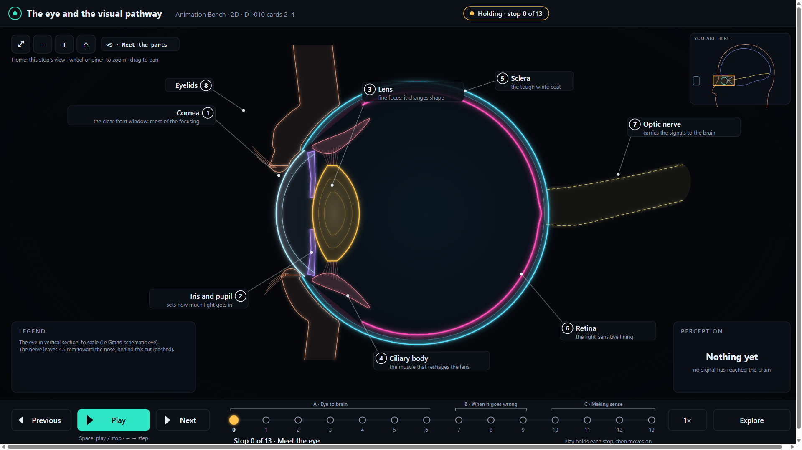
0 · Meet the eye
the eye receiving light from an object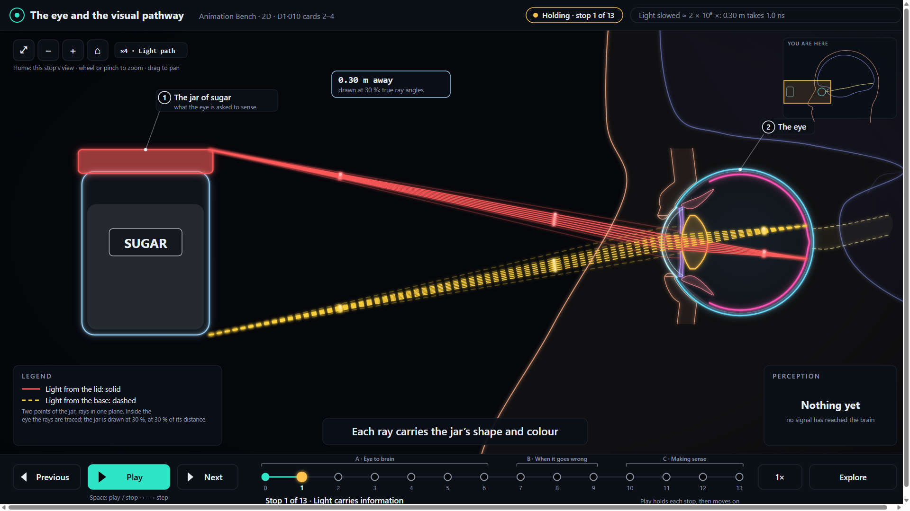
1 · Light carries information
The light carries information about the environment.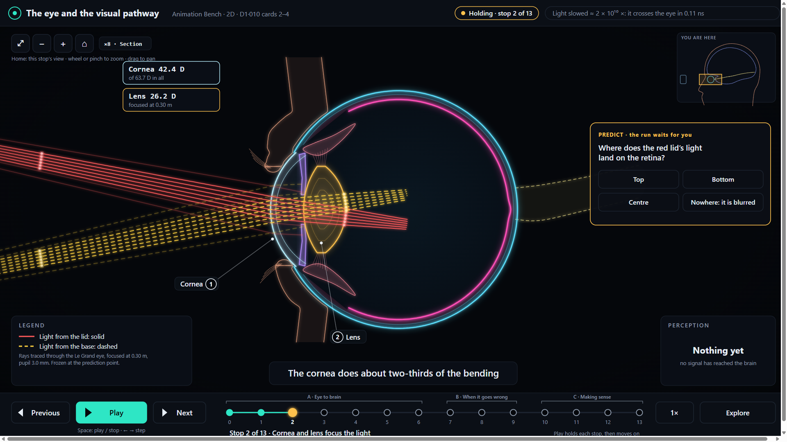
2 · Cornea and lens focus the light
The cornea and lens work together to focus incoming light onto the retina.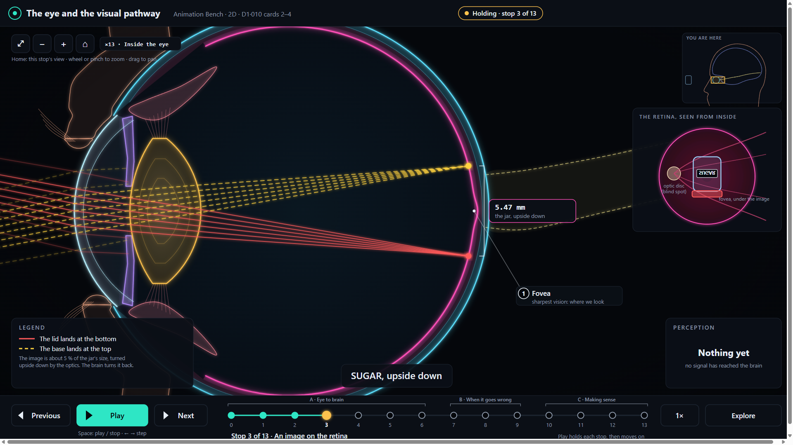
3 · An image on the retina
…onto the retina.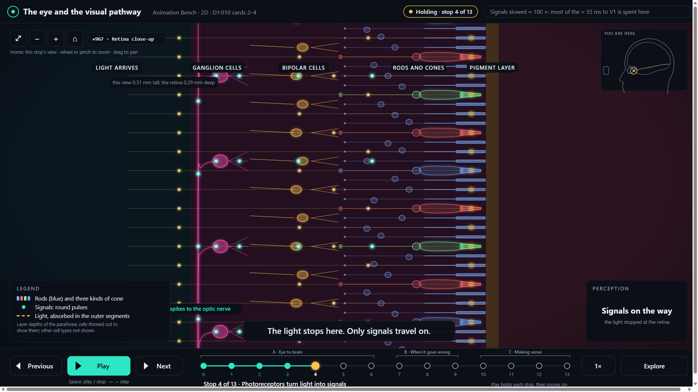
4 · Photoreceptors turn light into signals
photoreceptors, which respond to the light and start neural signals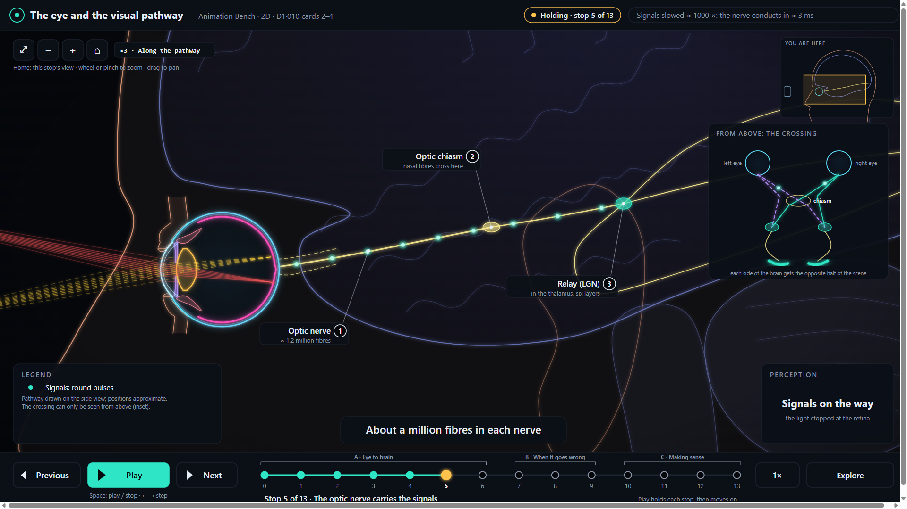
5 · The optic nerve carries the signals
These signals travel through the optic nerve and other parts of the visual pathway…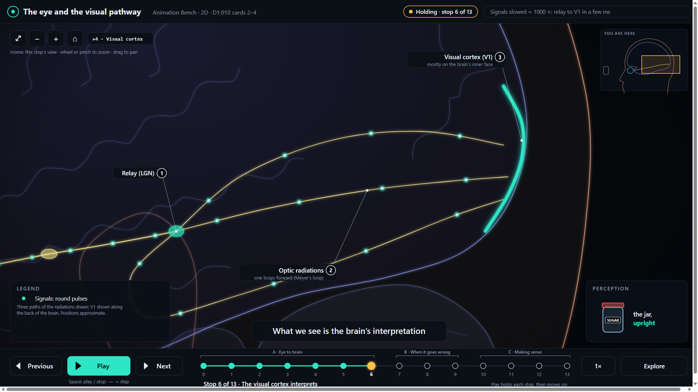
6 · The visual cortex interprets
…to the areas of the brain involved in vision. What we see is not simply the light itself.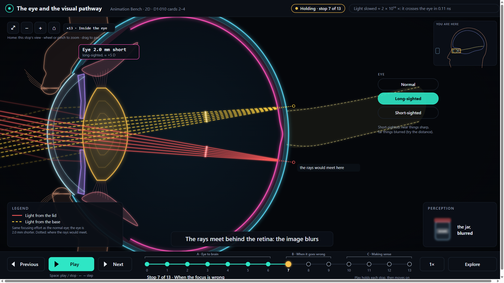
7 · When the focus is wrong
if the optical system of the eye does not focus the light properly onto the retina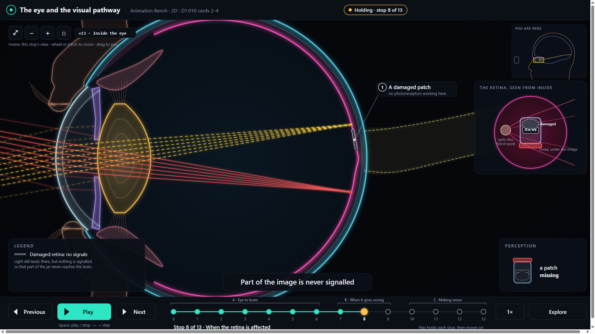
8 · When the retina is affected
or if the retina or other parts of the eye are affected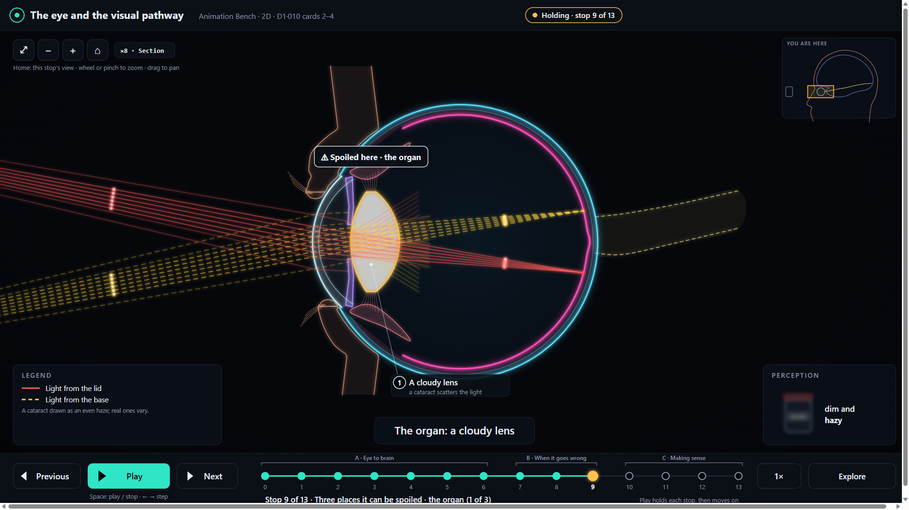
9a · Three places it can be spoiled · the organ (1 of 3)
the sense organ itself can introduce problems (card 4)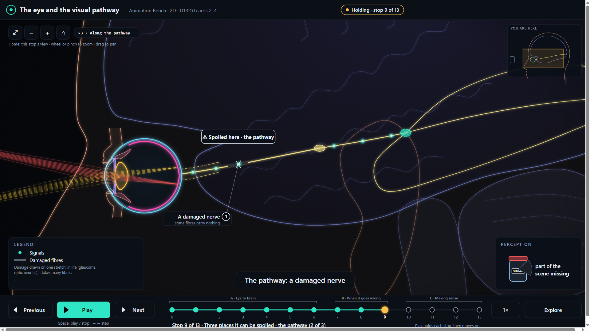
9b · Three places it can be spoiled · the pathway (2 of 3)
The transmission pathway can also introduce problems (card 4)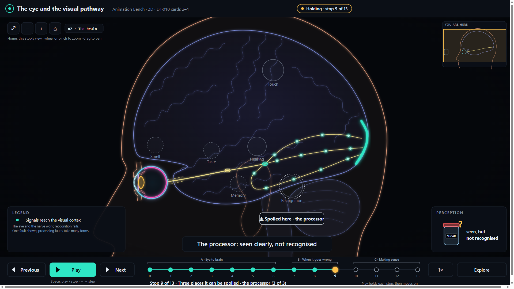
9c · Three places it can be spoiled · the processor (3 of 3)
the processing system can introduce problems (card 4)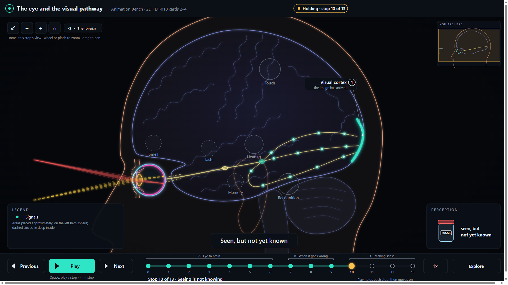
10 · Seeing is not knowing
The child may see the object, but simply seeing it does not mean the child knows what it is called…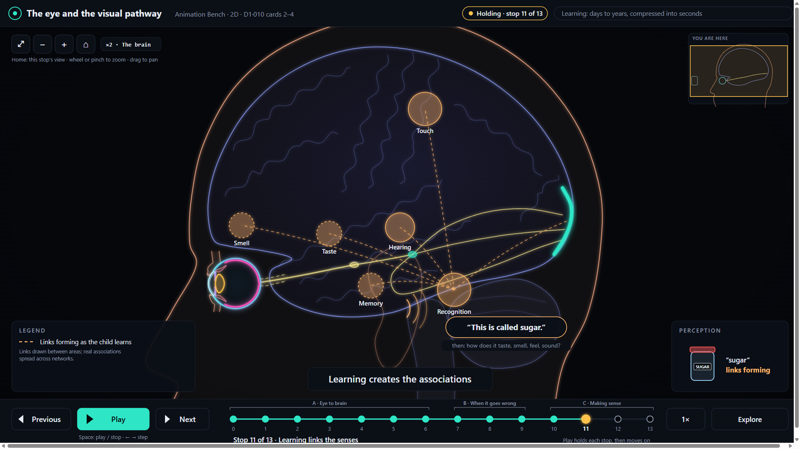
11 · Learning links the senses
“This is called sugar” … How does it taste? How does it smell? How does it feel? Does it make a sound?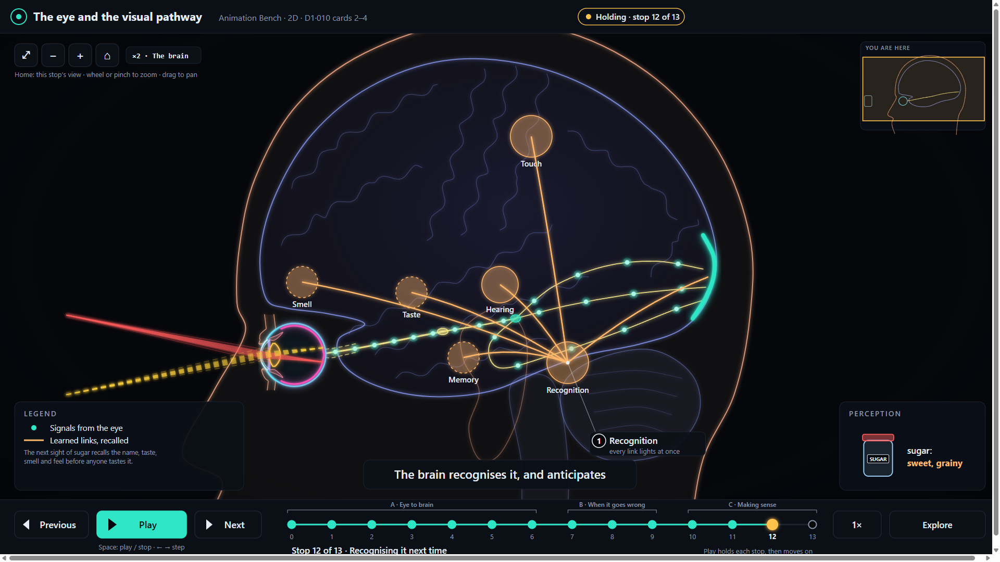
12 · Recognising it next time
the next time … the brain can draw on that experience to recognise it and anticipate some of its properties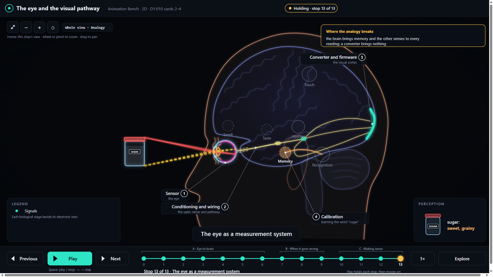
13 · The eye as a measurement system
a simplified way of thinking about how humans interface with our environment (the ANALOGY)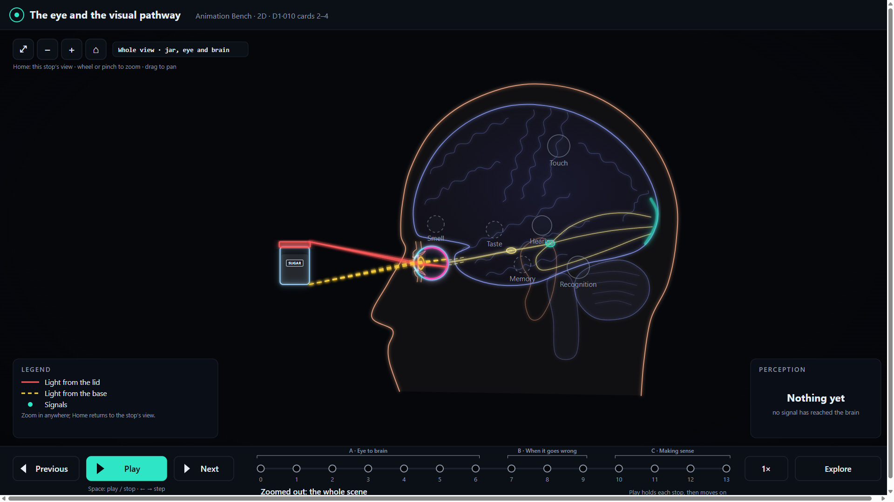
Zoomed out
zoom out from any stop: the whole scene